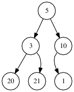
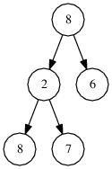

In this problem we consider binary trees, represented by pointer data structures.
A binary tree is either an empty tree or a node (called the root) consisting of a single integer value and two further binary trees, called the left subtree and the right subtree. For example, the figure below shows a binary tree consisting of six nodes. Its root contains the value 5, and the roots of its left and right subtrees have the values 3 and 10, respectively. The right subtree of the node containing the value 10, as well as the left and right subtrees of the nodes containing the values 1, 20 and 21, are empty trees.

A binary tree can be given using a pointer data structure. Assume that the following declarations are given:
class Tree(var x: Int, var l: Tree, var r: Tree)
An empty tree is represented by an empty pointer (denoted by null). A non-empty tree is represented by a pointer to an object representing its root. The attribute x holds the integer contained in the root, whereas attributes l and r hold the left and right subtrees of the binary tree, respectively.
A path in a binary tree is a non-empty sequence of nodes that one can traverse by following the pointers. The length of a path is the number of pointers it traverses. More formally, a path of length K is a sequence of nodes P[0], P[1], ..., P[K], such that node P[I + 1] is the root of the left or right subtree of P[I], for 0 ≤ I < K. For example, the sequence of nodes with values 5, 3, 21 is a path of length 2 in the tree from the above figure. The sequence of nodes with values 10, 1 is a path of length 1. The sequence of nodes with values 20, 3, 21 is not a valid path.
The height of a binary tree is defined as the length of the longest possible path in the tree. In particular, a tree consisting of only one node has height 0 and, conventionally, an empty tree has height −1. For example, the tree shown in the above figure is of height 2.
A binary tree T is given. A node of tree T containing value V is described as visible if the path from the root of the tree to that node does not contain a node with any value exceeding V. In particular, the root is always visible and nodes with values lower than that of the root are never visible.
For example, the tree shown in the above figure has four visible nodes: namely, those with values 5, 10, 20 and 21. The node with value 1 is not visible because there is a node with value 10 on the path from the root to that node. The node with value 3 is not visible because its value is lower than that of the root, which has value 5.
Write a function:
object Solution { def solution(t: Tree): Int }
that, given a binary tree T consisting of N nodes, returns its number of visible nodes. For example, given the tree shown in the figure above, the function should return 4, as explained above.
Given tree T with the following structure:

the function should return 2, because the only visible nodes are those with value 8.
For the purpose of entering your own test cases, you can denote a tree recursively in the following way. An empty binary tree is denoted by None. A non-empty tree is denoted as (X, L, R), where X is the value contained in the root and L and R denote the left and right subtrees, respectively. The trees from the above two figures can be denoted as:
(5, (3, (20, None, None), (21, None, None)), (10, (1, None, None), None))and:
(8, (2, (8, None, None), (7, None, None)), (6, None, None))Assume that:
- N is an integer within the range [0..50,000];
- each value in tree T is an integer within the range [−100,000..100,000];
- the height of tree T (number of edges on the longest path from root to leaf) is within the range [−1..500].
Complexity:
- expected worst-case time complexity is O(N);
- expected worst-case space complexity is O(N).